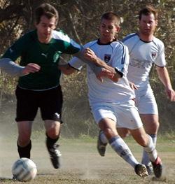
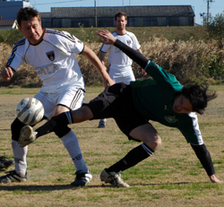
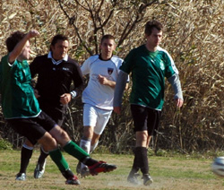

|
Misato, Sunday 9th December,
Misato continues to develop into a rich and multi-faceted ecosystem - there are dry mud-flats in the center, sparse grasslands out on the sides, and the jungle encroaches along the northwestern border.
On Sunday there were also the usual gale-force winds lengthwise down the pitch.
In these conditions the Hibs met Sala, a tough, balanced team that has always given us a battle over the years. Sala turned out en masse and looked like they could have fielded another squad. The teams knew they were going to have to take turns pinned in their own half by the absurd wind, and we got the honor first.
Sala poured on the pressure immediately, and repeatedly got the ball into our penalty box but were unable to convert into any shots on goal. Hibs eventually settled down and began to knock the ball around the pitch, and despite the wind were able to strike out on some counter attacks.
Sala's best chances in the half came after we committed fouls deep in our own territory - they put in some dangerous crosses but were unable to connect. One of their forwards picked off defender Yasu in our backfield and went in unmarked but was also unable to get a shot off as the defense recovered. Despite the wind the Hibs had two great chances on counter-attacks, Andre put Tomo through alone but Sid made a great save to tip it wide, and then Andre laid a pass off to Mike, who one-timed it low right but again Sid sprawled to make the save. 0-0 into the half, and now the wind was behind us.
Sala came out strong and had a few forays early, but our defense, anchored by steady Ike at the back, was up to the challenge and we survived without any shots on goal. We then worked the ball around on the ground and up to forwards Yama and Andre, who was marked tough all game but came through with some clever passing.
After we found him wide left he beat his man and whipped it in to Tomo, who knocked it down past his defender and blasted it home, 1-0 Hibs. Then Mike, who looked great in midfield and ran hard all game, found Andre out wide left again - he was draped by the defense but managed to put in a cross as he fell out of bounds, Tomo swooped in to volley it home from close range, 2-0. As the teams tired the pitch began to open up, and Mike and Andre worked an exchange that left Mike open in the box where he fired it past Sid, 3-0.
The score reflected the run of play in a hard-fought, physical game. Occasionally tempers flared and there was some interesting dialogue, but nothing boiled over and we all shook hands at the whistle, sportsmen to the end.
Report by Jay Alabaster
|